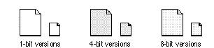
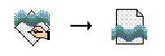
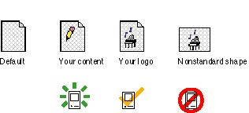
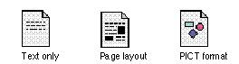

|
Document IconsDocuments are the files in which users store the content they create inan application. The document icon uses the outline of a page with a turned-down upper-right corner. This shape evokes the concept that a document is like a piece of paper, a typical storage medium for information in an office. Figure 8-33 shows the default document icons that appear in the Finder if you don't supply a custom icon for your documents. Figure 8-33 Default document icons  You can customize this document page icon so that it relates to your application icon by adding the same graphics you use in your application icon. Or you can add graphics to the document page that indicate the content that your documents hold. Figure 8-34 shows the relationship between an application icon and its document icon. Figure 8-34 Application icon and document icon with the same graphic element  As with the
application icon, it's OK to use your company
identification in a document icon. Be sure not to change
the shape of the document icon unless the document that
your application creates is fundamentally different from
most documents. One example of a document that is
fundamentally different is a stack. The stack icon is a
metaphor that represents a stack of cards, Figure 8-35 shows some examples of custom document icons that show the range of acceptable and unacceptable customizations. Figure 8-35 Acceptable and unacceptable custom document icons  Several conventions exist for conveying document types. You can use these visual clues or others that have meaning for your documents' contents. Documents that are text-only or primarily text use broken lines on the document page. Page layout documents typically include a filled rectangle and broken lines to indicate that the document contains text and pictures. Graphics document icons use geometric shapes or other graphics or graphics tools such as paintbrushes. The standard representation for a file of type 'PICT' is a circle, a square, and a triangle. Use this symbol to indicate files of this type. Figure 8-36 shows document icons with all of these symbols. Figure 8-36 Document icons with standard symbols  |